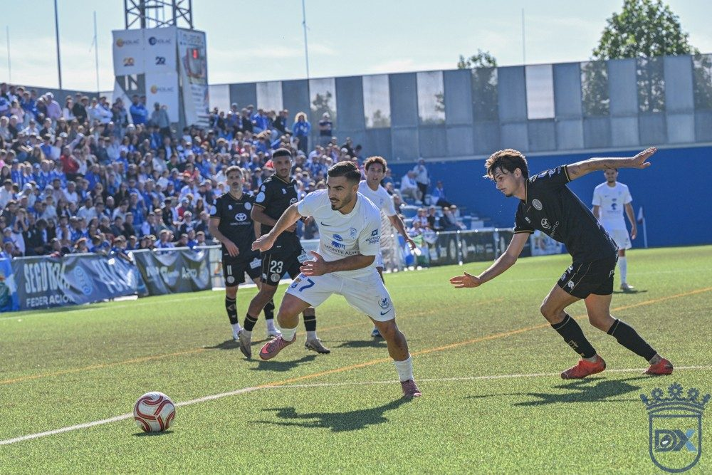

Recreativo thrash Badajoz and Xerez climb to second place

Photo: Diario XerecistaThe leaders hammered Badajoz 7-0 in the most eye-catching matchday of the season, in which Xerez, with their fifth straight win, rose to second place pending the two postponed games.
Recreativo de Huelva produced the result of matchday 12 in Group IV of Segunda RFEF by thrashing Badajoz 7-0 at the Nuevo Colombino. The Huelva side have 24 points with a game in hand and extend their lead at the top. Badajoz, who started the weekend in third, drop to seventh.
Xerez, second
Xerez CD made the most of the matchday to climb three places, from fifth to second, after a 0-2 win over Atlético Central at the Ciudad de Alcalá with goals from Chacartegui and Zeki. It is their fifth straight win. Abel Segovia's side have 21 points, the same as Estepona and Don Benito, whom they lead on goal difference, and sit three behind Recreativo.
The table is still provisional because two postponed games remain. Sevilla Atlético-Recreativo de Huelva, from matchday 11, is played on Wednesday 25 November at 18:00. If they win, the leaders could stretch their lead to six points. Betis B-Tenerife B, from matchday 10, is scheduled for 3 January.
Estepona keep rolling
Estepona made it three wins in a row by beating Sevilla Atlético 4-0, with goals from Yuste, Arriaza, Aguilar and Ariel. Before that they had beaten Tamaraceite 5-0 and won 3-4 in Mijas. They are third on 21 points.
Don Benito, meanwhile, could only draw 0-0 with Marbella and are fourth. Ciudad de Lucena drew 1-1 with Betis Deportivo and hold the last play-off place with 20 points.
Linares, Xerez's next opponents
Linares Deportivo, who visit Chapín next Sunday, beat Atlético Sanluqueño 3-0 with goals from Juanma, Eu, from the penalty spot, and Gascón. The Jaén side are eight matchdays unbeaten (four wins and four draws) since their defeat to Betis B on matchday 4. They are sixth with 20 points, one fewer than Xerez.
Las Palmas Atlético get some breathing space
At the bottom, Las Palmas Atlético won for the second game running, 0-3 away to Mijas Las Lagunas, with goals from Cacho, from the penalty spot, Aimar and Bomba. On 11 points they are fifteenth. Antoniano beat Puente Genil 3-2 with a 93rd-minute goal from José Mari and have 9 points. Tenerife B beat Tamaraceite 2-1; Tamaraceite are bottom with 6 points.
Matchday 12 results
Tenerife B 2-1 Tamaraceite · Estepona 4-0 Sevilla Atlético · Atlético Central 0-2 Xerez CD · Don Benito 0-0 Marbella · Mijas Las Lagunas 0-3 Las Palmas Atlético · Antoniano 3-2 Puente Genil · Linares Deportivo 3-0 Atlético Sanluqueño · Ciudad de Lucena 1-1 Betis B · Recreativo de Huelva 7-0 Badajoz
🇪🇸 Leer en español ← Back to home